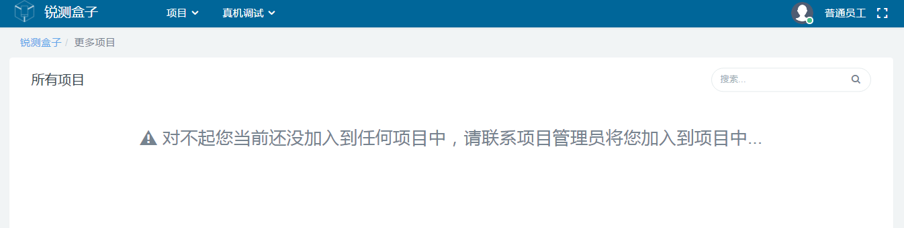
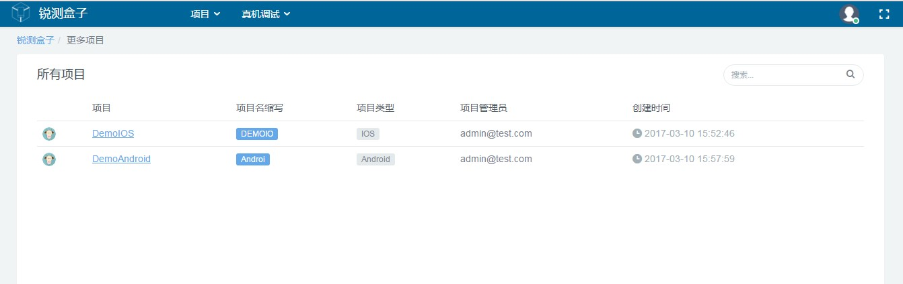
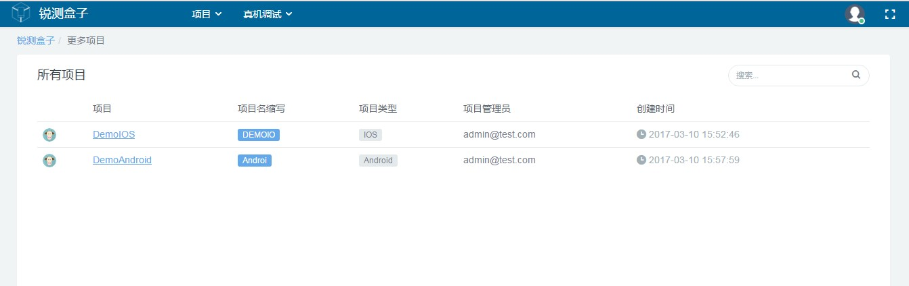

1.2.2 普通成员
普通成员首次登录本系统时有两种情况，一种是未被赋予用户身份(项目管理员和项目成员)，另外一种是被赋予用户身份。登录成功后的默认页面如下图所示。

普通成员登录后默认页面图
项目管理员和项目成员登录后默认页面图
普通成员首次登录本系统时有两种情况，一种是未被赋予用户身份(项目管理员和项目成员)，另外一种是被赋予用户身份。登录成功后的默认页面如下图所示。
普通成员登录后默认页面图
项目管理员和项目成员登录后默认页面图